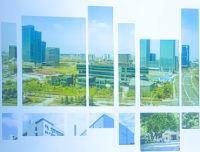

加快对外开放进程
1978年，芜湖市被列为开放城市，从此揭开新中国成立后芜湖对外开放的序幕。
1982年被列为全国16个中等明星城市之一；
1985年被国务院批准为全国甲类开放城市；
1990年安徽省委、省政府确定芜湖为“开发皖江、呼应浦东”的战落重点和突破口；
1991年批准芜湖港对外国籍船舱开放；
1992年被批准为沿江开放城市和外贸自主权城市。

弋江区滨江松鼠小镇
松鼠小镇颠覆传统商业模式，充分融合森林元素及三只松鼠IP，以数字化推动主人游乐体验升级，以IP化绽放品牌文化势能，致力于为主人创造一个松鼠王国，是集产业，文化，旅游，商业为一体的跨界型主题娱乐综合体。